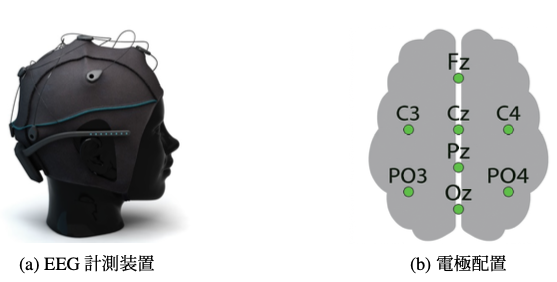
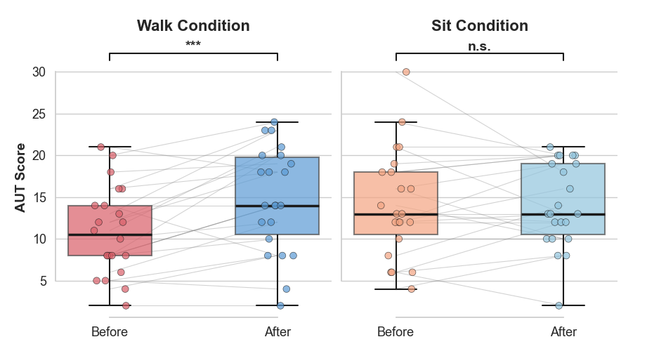
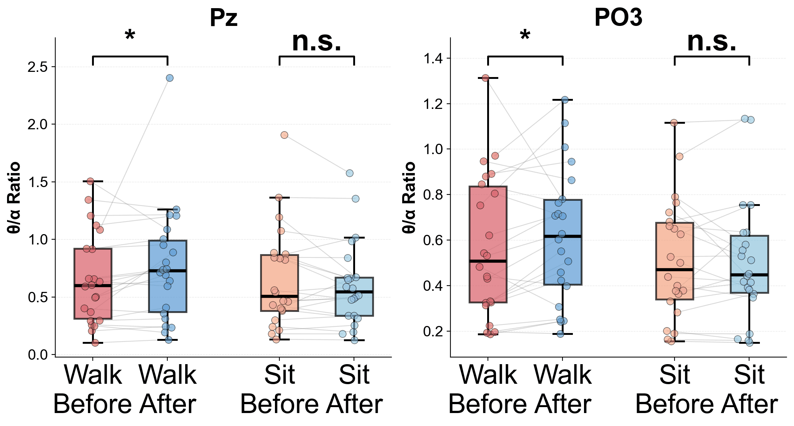

林 豪杰
脳波（EEG）を用いた人間の注意力・認知状態の評価を研究しています。
Researching human attention and cognitive state assessment using EEG signals.
使用脑电图（EEG）研究人类注意力和认知状态评估。
Research interests include EEG-based attention assessment, cognitive state estimation, and driving support systems.Research interests include EEG-based attention assessment, cognitive state estimation, and driving support systems.Research interests include EEG-based attention assessment, cognitive state estimation, and driving support systems.
- 所属 / AffiliationAffiliation所属机构 / Affiliation
- 日本大学大学院 理工学研究科 情報科学専攻Nihon University, Graduate School of Science and Engineering, Computer Science日本大学理工学研究科信息科学专业
- 研究室 / LaboratoryLaboratory实验室 / Laboratory
- 高橋・福田研究室Takahashi-Fukuda Lab高桥・福田实验室
- 研究分野 / Research AreaResearch Area研究领域 / Research Area
- EEG・Attention Assessment・Cognitive State Estimation
- 出身地 / OriginOrigin籍贯 / Origin
- 中国 福建省Fujian, China中国 福建省
現在の研究Current Research当前研究
RESEARCH THEMERESEARCH THEME研究主题
脳波を用いた帯電微粒子水が運転中の注意力に及ぼす影響評価
Evaluation of the Effects of Charged Fine Particle Water on Driving Attention Using EEG
使用脑电图评估带电微粒子水对驾驶注意力的影响
研究背景： 交通事故の多くはドライバーの注意力低下を伴うヒューマンエラーに起因している。また，車室内の空気環境は認知機能や作業効率に影響を与える可能性が指摘されている。
研究目的： 帯電微粒子水による車室内環境の変化が運転中の注意力に及ぼす影響を，脳波（EEG）を用いて客観的に評価する。
Background: Many traffic accidents are caused by human errors associated with reduced driver attention. Previous studies have suggested that in-vehicle air quality may affect cognitive performance and task efficiency.
Objective: To objectively evaluate the effects of changes in the in-vehicle environment caused by charged water particles on driver attention using electroencephalography (EEG).
研究背景： 许多交通事故源于驾驶员注意力下降导致的人为失误。此外，研究表明车内空气环境可能影响人的认知功能和作业表现。
研究目的： 利用脑电图（EEG）客观评估带电微粒子水引起的车内环境变化对驾驶注意力的影响。

🧠EEG
学会発表・論文Publications & Presentations学术发表和论文
ACADEMIC WORKACADEMIC WORK学术工作過去の研究Previous Research过去的研究
UNDERGRADUATE WORKUNDERGRADUATE WORK本科工作学部研究テーマUndergraduate Research Theme本科研究课题
背景Background背景
知識創造型社会において創造性の重要性が高まる一方，高い認知負荷環境では創造的思考の低下が課題となっている。
While the importance of creativity is increasing in a knowledge-creating society, the decline in creative thinking in high cognitive load environments has become a challenge.
在知识创造型社会中，创造力的重要性日益增加，但在高认知负荷环境下创造性思维的下降已成为一个挑战。
目的Objective目的
歩行による介入が創造的思考へ与える影響を，Alternative Uses Task（AUT）および脳波（EEG）を用いて客観的に評価する。
To objectively evaluate the impact of walking interventions on creative thinking using the Alternative Uses Task (AUT) and electroencephalography (EEG).
使用替代用途任务（AUT）和脑电图（EEG）客观评估步行干预对创造性思维的影响。
結果Results结果
AUTスコア中央値は歩行前11点から歩行後14点へ上昇し，被験者22名中17名（77%）で改善が確認された（t(22)=4.11, p=0.0003, d=0.88）。EEG解析ではPzチャネル（p=0.0164, d=0.342）およびPO3チャネル（p=0.0317, d=0.269）においてθ/α比率の有意な増加が認められた。
The median AUT score increased from 11 before walking to 14 after walking, with improvement confirmed in 17 out of 22 subjects (77%) (t(22)=4.11, p=0.0003, d=0.88). EEG analysis showed a significant increase in the θ/α ratio in the Pz channel (p=0.0164, d=0.342) and PO3 channel (p=0.0317, d=0.269).
AUT得分中位数从步行前的11分上升至步行后的14分，22名受试者中有17名（77%）得到改善（t(22)=4.11, p=0.0003, d=0.88）。EEG分析显示，在Pz通道（p=0.0164, d=0.342）和PO3通道（p=0.0317, d=0.269），θ/α比率显著增加。


結論Conclusion结论
歩行は創造的思考を促進する可能性があり，頭頂―後頭領域におけるθ/α比率は創造性を評価する客観的指標として有効であることが示唆された。
Walking may promote creative thinking, suggesting that the θ/α ratio in the parieto-occipital region is an effective objective indicator for evaluating creativity.
步行可能促进创造性思维，这表明顶枕区的θ/α比率是评估创造力的有效客观指标。
スキルSkills技能
TECHNICAL SKILLSTECHNICAL SKILLS技术技能趣味・関心Hobbies & Interests爱好和兴趣
ABOUT MEABOUT ME关于我切手収集Stamp Collecting邮票收集
各国の切手を収集しています。歴史や文化が小さな紙に凝縮されていることに魅力を感じています。I collect stamps from various countries, fascinated by how history and culture are condensed on a small piece of paper.我收集来自各国的邮票，对历史和文化如何浓缩在一小张纸上的方式着迷。
サッカー観戦Watching Football足球观赛
応援チームはプレミアリーグのマンチェスター・シティ。好きな選手はケヴィン・デ・ブライネです。I support Manchester City in the Premier League, with Kevin De Bruyne as my favorite player.我支持英超的曼彻斯特城，凯文·德布劳内是我最喜欢的球员。